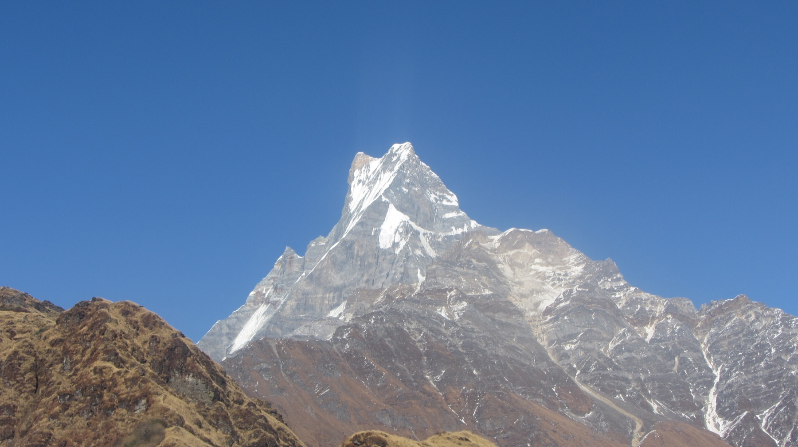

From Patan’s courtyards to Bhutan’s monasteries, then six walking days on the Mardi Himal ridge.
Updated 26 September 2026

Mardi Himal · your next chapterPhotograph: Pursob64 / Wikimedia Commons · CC BY-SA 4.0 · cropped in layout
Already arrangedPatan + Bhutan26 Sep – 6 Oct
Recommended extension6 walking daysMardi Himal · 8–13 Oct
Return to Kathmandu14 October2 full buffer days before flying home
Booked Ticket / hotel evidence Breathe Bhutan Arranged package programme Proposed Still to reserve or agree
THE WHOLE TRIP · METRES ABOVE SEA LEVEL
Your altitude, day by day
Where you’ll sleep, and how high you’ll go during the day. These are approximate area and route elevations, not surveyed hotel heights.
Overnight elevationDay high on land◇ Optional base camp
Scroll sideways to see every date on a small screen. “Day high” includes road passes and where you start a descent; it is not necessarily a hiking objective. Aircraft and cabin altitudes are excluded. Gaps mean an overnight in transit or an unspecified home elevation, not zero metres.
Sleep On the aircraftJourney TG935 · BRU 13:30 → BKK 05:35 (+1 day)
Sleep In transitDay high Not plotted
0–4,500 m · approximate, on land
Before flying
Arrange your trip to Brussels Airport with a target arrival around 10:30. Keep the Bhutan eVisas, first hotel address, onward tickets and essential medication in hand luggage.
In the air
Settle into the overnight flight. Keep your next day light: Kathmandu arrival is not until lunchtime.
26 SEPSATURDAY
Bangkok → Kathmandu → Patan
Booked
Sleep Tajaa Pha The Heritage Home · night 1/2Journey TG319 · BKK 10:15 → KTM 12:25; then ~45–90 min by car
Sleep ~1,400 mDay high ~1,400 m
0–4,500 m · approximate, on land
Morning
Arrive Bangkok at 05:35; the booked connection leaves at 10:15. Follow international transfer signs and verify that your checked bags are tagged through to KTM.
Afternoon
Complete Nepal entry formalities, collect bags, arrange data and meet the hotel driver if confirmed. Expect hotel arrival roughly 14:30–16:00, depending on queues and traffic.
Evening
A gentle walk around Pimbahal pond and the surrounding Patan lanes, then an early local dinner. Leave ambitious sightseeing for tomorrow.
Breakfast is included in the two-night hotel booking. The airport shuttle is a request in the confirmation, not a confirmed service.
27 SEPSUNDAY
Courtyards, craftsmanship & a slow Patan day
Proposed
Sleep Tajaa Pha The Heritage Home · booked night 2/2Journey Mostly walking; optional short taxis
Sleep ~1,400 mDay high ~1,400 m
0–4,500 m · approximate, on land
Morning
After breakfast, explore Patan Durbar Square and Patan Museum. Allow 2–3 hours for the courtyards and the collections rather than rushing between monuments.
Afternoon
Wander to the Golden Temple and artisan streets; ask the hotel about a local Newari lunch. Keep time for a trek-agency call, cash, and any last gear purchases.
Evening
Return to Pimbahal for tea. Repack for Bhutan, confirm the morning driver and eat early. Save Boudhanath and Bhaktapur for the end of the trip.
Target KTM international terminal at 06:10; arrange a Patan pickup around 05:00–05:15, adjusted by your hotel. Carry printed Bhutan eVisas.
Afternoon
Meet Breathe Bhutan, enjoy the welcome ceremony and drive to Thimphu. The package includes the arts-and-crafts school with an interactive session, an astrologer consultation and a blessing.
Evening
Dinner and an optional taste of Thimphu nightlife if you have the energy. Ask the guide to move school visits if opening hours or arrival delays require it.
Bhutan is 15 minutes ahead of Nepal. The apparent flight-clock difference includes that time change.
29 SEPTUESDAY
Thimphu trails → Dochula → Punakha
Breathe Bhutan
Sleep Dhumra · Punakha · night 1/2Journey Walking plus ~2½ h road transfer (operator estimate)
Sleep ~1,300 mDay high ~3,100 m
0–4,500 m · approximate, on land
Morning
Follow the Takin Trail, visit the preserve and hike to Wangditse Temple. Prepare and offer butter lamps; visit Buddha Dordenma.
Afternoon
Drive over Dochula Pass, pausing for the mountain panorama if skies are clear. Stretch your legs at Lampari Botanical Park before descending into Punakha.
Evening
Settle into Dhumra. Keep dinner relaxed after a day with multiple stops; ask the guide which activities are best combined if time runs short.
30 SEPWEDNESDAY
Village life & Punakha’s great dzong
Breathe Bhutan
Sleep Dhumra · Punakha · night 2/2Journey Local drives; Khamsum approach ~45 min as quoted
Sleep ~1,300 mDay high ~1,600 m
0–4,500 m · approximate, on land
Morning
Join rural activities at Ama Om Homestay, then walk up to Khamsum Chorten. Ask about the meaning of the artwork and the valley landscape.
Afternoon
Picnic beside the river, visit Punakha Dzong wearing the arranged national dress, and walk the suspension bridge.
Evening
Enjoy a second evening at Dhumra. Charge cameras and prepare a warmer layer for Phobjikha.
01 OCTTHURSDAY
Nuns, forest paths & Phobjikha
Breathe Bhutan
Sleep Hotel PhobjikhaJourney ~2½ h drive plus ~3 h Lawala–Kumbu hike
Sleep ~2,900 mDay high ~3,300 m
0–4,500 m · approximate, on land
Morning
Visit Sangchen Nunnery and spend time with the nuns, guided by their schedule. Drive through Nubding Valley towards Phobjikha.
Afternoon
Walk the Lawala–Kumbu nature route at an unhurried pace. Carry rain protection and a warm layer in your daypack.
Evening
Attend evening prayers at Gangtey Shedra if the monastery welcomes visitors that day. Your guide will explain where to sit and when photography is appropriate.
02 OCTFRIDAY
Gangtey valley → Wangdue
Breathe Bhutan
Sleep Lobesa Boutique · WangdueJourney ~1½ h nature trail; ~2½ h drive
Sleep ~1,300 mDay high ~3,300 m
0–4,500 m · approximate, on land
Morning
Optional early cycling, then Gangtey Monastery and the Gangtey Nature Trail. Choose walking only if you prefer an easier morning.
Afternoon
Visit the Crane Information Centre, then transfer to Lobesa Boutique. Ask about conservation work and the valley’s seasonal rhythms.
Expectation
Treat this as a landscape and culture day: migratory black-necked cranes generally arrive in late October, so wild sightings on 2 October are unlikely.
Sleep Terma Linca Paro · first stayJourney ~3 h drive; Zuri hike ~1 h
Sleep ~2,200 mDay high ~3,100 m
0–4,500 m · approximate, on land
Morning
Visit Sopsokha village and Chimmi Lhakhang. Let the guide explain the temple’s fertility traditions and the imagery in the village.
Afternoon
Drive to Paro for the dzong, National Museum and easy Zuri hike. Take part in the sand-mandala tryout, subject to local arrangements.
Evening
Check the Bumdra forecast, walking kit and camp arrangements with your guide. Leave your main luggage in secure storage as arranged by the operator.
04 OCTSUNDAY
Bumdra: a night above the valley
Breathe Bhutan
Sleep Bumdra glamping · approximately 3,800 m; verify campJourney Operator quotes 6–7 h hiking
Sleep ~3,800 mDay high ~3,900 m
0–4,500 m · approximate, on land
Morning
Transfer to Sangchokhor and begin the climb to Bumdra Monastery. Set a conversational pace and keep your warm clothes, rain shell and water accessible.
Afternoon
Reach the camp, rest and enjoy the surroundings. The prayer-flag visit near the sky-burial site should follow the guide’s instructions and local permissions.
Important
The jump from Paro to a high sleeping altitude is substantial. Discuss acclimatisation, symptoms and a lower-altitude alternative with Breathe Bhutan before this day; do not treat earlier sightseeing hikes as guaranteed protection.
Sleep Terma Linca Paro · second stayJourney Quoted 3–4 h to Tiger’s Nest; allow extra for visit & descent
Sleep ~2,200 mDay high ~3,800 m
0–4,500 m · approximate, on land
Morning
Descend from Bumdra towards Tiger’s Nest. Take your time on stairs and save energy for the rest of the descent to the road.
Afternoon
Visit the monastery as permitted, then enjoy the optional farmhouse hot-stone bath. Ask the operator whether the bath is included: the programme calls it optional, while the signature-experience list also includes it.
Evening
A short Paro shopping stroll or optional Namgay brewery visit if energy permits. Settle guide/driver tips, collect luggage and prioritise an early night before the 07:10 flight.
03 / NEPAL · 6–13 OCTOBER
Sarangkot & the Mardi Himal ridge
06 OCTTUESDAY
Paro → Kathmandu · an overnight pause
Proposed
Sleep Kathmandu / Patan hotel · reserve 6–7 OctoberJourney Booked KB400 · PBH 07:10 → KTM 08:10; hotel transfer ~45–90 min
Sleep ~1,400 mDay high ~2,200 m
0–4,500 m · approximate, on land
Very early
Confirm the Paro pickup and airport reporting time with Breathe Bhutan; have breakfast packed.
Arrival
Clear Nepal immigration, collect bags and meet your hotel driver. Reserve early check-in if you want a room before the normal afternoon time.
Afternoon
Rest in Kathmandu/Patan, check trekking gear and confirm tomorrow’s Pokhara flight. Keep sightseeing optional after the early start.
A same-day Pokhara flight is possible in principle after the scheduled 08:10 arrival, but immigration, baggage, a terminal transfer and fresh check-in make it an unprotected separate-ticket connection. A date-specific onward flight has not been verified. The overnight stay removes that connection from the plan. Buddha Air requests arrival at least one hour before departure.
Sleep Himalayan Hidden Treasure · Sarangkot · not bookedJourney Proposed morning KTM–PKR flight; car to Sarangkot ~45–75 min
Sleep ~1,600 mDay high ~1,600 m
0–4,500 m · approximate, on land
Morning
Take a flexible morning flight to Pokhara, subject to the published schedule and availability. Allow the airline’s reporting time plus hotel-to-airport traffic margin.
Afternoon
Transfer to Himalayan Hidden Treasure in Sarangkot. Meet your guide for the route, weather, permits and equipment briefing; organise main-bag transfer to your post-trek Lakeside hotel.
Evening
Enjoy the terrace if skies are clear and prepare for an early start. Confirm breakfast and the car to Kande; permits should be ready before trekking.
Sleep Forest Camp teahouse · ~2,500–2,600 mJourney Sarangkot–Kande car ~1–1½ h; walking ~6–8 h excluding long stops
Sleep ~2,500 mDay high ~2,500 m
0–4,500 m · approximate, on land
Early
Catch sunrise from the hotel if timing allows, then breakfast and an early car to Kande (~1,770 m). Keep a separate sunrise excursion optional: this is a full walking day.
Trail
Walk via Australian Camp, Pothana and Pitam Deurali, then continue through the forest to Forest Camp. This combines the former first two stages; carry lunch or agree a stop with your guide.
At the lodge
Arrive with daylight to spare, eat and rest. Expect roots, steps and slippery ground after rain. Keep dry sleepwear separate from trekking clothes.
Six days is a plausible route for walkers comfortable with this longer approach and the later viewpoint day. Have your guide confirm timing and lodge elevations. If the first stage is too much, stop at Deurali and use the extra-day contingency rather than rushing.
Sleep Low Camp teahouse · ~2,970 mJourney ~3–4 h walking; roughly +370–470 m sleeping gain
Sleep ~2,970 mDay high ~2,970 m
0–4,500 m · approximate, on land
Morning
Climb steadily through forest. As it thins, look for your first close views of Machhapuchhre if cloud allows.
Afternoon
Stop at Low Camp rather than pushing straight to High Camp. Optional very gentle wandering close to the lodge if you feel well.
Evening
Check appetite, headache and unusual tiredness with the guide. Rest here or descend if needed; the schedule does not override symptoms.
10 OCTSATURDAY
A short stage onto Badal Danda
Proposed
Sleep Badal Danda teahouse · ~3,210 mJourney ~1½–3 h walking; roughly +240 m sleeping gain
Sleep ~3,210 mDay high ~3,210 m
0–4,500 m · approximate, on land
Morning
A short uphill walk brings you to the open ridge. Take slow photo stops as Annapurna South and Machhapuchhre reveal themselves.
Afternoon
Enjoy a quiet lodge afternoon rather than adding a strenuous outing. This intermediate overnight splits the ascent above 3,000 m.
Evening
Check tomorrow’s lodge elevation, forecast and ridge conditions. If the intended lodge is closed or full, ask the guide for a conservative alternative rather than automatically doubling the climb.
11 OCTSUNDAY
Along the ridge to High Camp
Proposed
Sleep High Camp teahouse · ~3,550–3,580 mJourney ~2–3 h walking; roughly +340–370 m sleeping gain
Sleep ~3,550 mDay high ~3,580 m
0–4,500 m · approximate, on land
Morning
Walk the open ridge to High Camp, taking care where the path narrows. Wind and cloud can make the same terrain feel very different.
Afternoon
Lunch, rest and a guide briefing. Agree tomorrow’s destination, turnaround time and safe start time; a pre-dawn departure is conditional on visibility and trail conditions.
Evening
Prepare headtorch, warm gloves, hat, layers, water and snacks. Go to bed early; skip the viewpoint outing if symptoms develop.
12 OCTMONDAY
The big view, then sleep lower
Proposed
Sleep Low Camp teahouse · ~2,970 mJourney ~7–9 h total for upper viewpoint (~4,200 m) & descent
Sleep ~2,970 mDay high ~4,200 m
0–4,500 m · approximate, on land
Early
With your guide, climb towards the upper viewpoint for the close-up mountain panorama. Start before dawn only if the guide judges the trail safe. Allow about 4–5 hours for the return outing from High Camp, then a substantial descent.
Decision
Base camp at roughly 4,500 m is an optional further extension, potentially adding 2–3 hours or more. Attempt it only with enough daylight, good conditions and everyone well; agree whether an extra High Camp night is needed. Never combine extra distance with a rushed descent.
Afternoon
Return to High Camp for food, collect your bag and descend through Badal Danda to Low Camp (~3–4 hours). If tired or delayed, use an agreed closer lodge and revise tomorrow with the guide.
Sleep Pokhara Lakeside hotel · reserve one nightJourney ~3–4 h steep descent; ~2–3 h jeep, condition-dependent
Sleep ~820 mDay high ~2,970 m
0–4,500 m · approximate, on land
Morning
Descend through the forest to Siding (~1,700–1,850 m). Use poles and take the downhill slowly; slippery steps can be harder on the knees than the ascent.
Afternoon
Meet your pre-arranged jeep at the agreed accessible roadhead. If road conditions prevent pickup in Siding, the guide must confirm the lower meeting point and extra walking time.
Evening
Check into your Lakeside hotel, collect stored luggage, enjoy a shower and an easy meal by Phewa Lake. Reconfirm the next morning’s flight and airport transfer.
This is the main trek-finish target. Keep onward arrangements flexible enough for one extra mountain night; protect the final Kathmandu buffer.
04 / BUFFER & HOME · 14–18 OCTOBER
Back to the valley, then home
14 OCTWEDNESDAY
Pokhara → Kathmandu
Proposed
Sleep Kathmandu / Patan hotel · night 1/3Journey Early PKR–KTM flight, subject to booking; ~25–30 min airborne
Sleep ~1,400 mDay high ~1,400 m
0–4,500 m · approximate, on land
Morning
Book an early flight and leave plenty of time for domestic check-in. Arrange hotel pickup, check the operating airport and travel with the permit and passport documents accessible.
Afternoon
Check into your final hotel. Patan is a pleasant familiar base; Boudha is an alternative if you prefer to stay near the stupa. Book one base for all three nights.
If disrupted
Use the remaining days to get back to Kathmandu. Ask the airline for the next workable flight; consider a daylight private car only after checking current road safety and access. Do not postpone this decision until 16 October.
15 OCTTHURSDAY
Bhaktapur, if the buffer is free
Proposed
Sleep Same Kathmandu / Patan hotel · night 2/3Journey Private car; allow ~1–1½ h each way from Patan
Sleep ~1,400 mDay high ~1,400 m
0–4,500 m · approximate, on land
Morning
If you are already back safely, visit Bhaktapur’s squares and pottery lanes. Ask a local guide to explain the Newar architecture and living traditions.
Afternoon
A relaxed lunch and, if you like dairy, a small serving of fresh juju dhau from a busy, reputable seller. Return without adding a second long excursion.
Priority
This remains a transport-recovery day if the mountains or flights have delayed you. The sightseeing is disposable; the buffer is valuable.
Sleep Same Kathmandu / Patan hotel · night 3/3Journey Local taxi; timing depends on traffic
Sleep ~1,400 mDay high ~1,400 m
0–4,500 m · approximate, on land
Morning
Keep the start easy. Finish shopping or revisit a favourite Patan courtyard; confirm tomorrow’s airport car and airline status.
Afternoon
If all travel is on track, head to Boudhanath for a respectful clockwise circuit and a quiet rooftop tea. Leave generous time to return through traffic.
Evening
Pack fully, keep flight documents offline and settle the hotel bill. Avoid a distant day trip: you should already be in the Kathmandu Valley tonight.
17 OCTSATURDAY
Kathmandu → Bangkok
Booked
Sleep In transit; next flight just after midnightJourney TG320 · KTM 13:30 → BKK 18:15
Sleep In transitDay high ~1,400 m
0–4,500 m · approximate, on land
Morning
Aim to be at KTM international around 10:30. Arrange pickup around 09:00 from Patan, adjusted by the hotel for traffic. Verify baggage is checked to Brussels.
Evening
The Bangkok connection is 5 h 50 min. Have dinner airside and check the gate. Your Brussels flight departs at 00:05 on Sunday 18 October, not Saturday night’s calendar date.
18 OCTSUNDAY
Bangkok → Brussels
Booked
Sleep HomeJourney TG934 · BKK 00:05 → BRU 07:15
Sleep Home · not estimatedDay high Not plotted
0–4,500 m · approximate, on land
Morning
Arrive Brussels at 07:15, collect bags and take your pre-arranged train, taxi or pickup home. Keep the first day back light.
When the mountains change the plan
One day late reaching Pokhara
Move Sarangkot to 8 October and the six walking days to 9–14 October. Fly to Kathmandu on 15 October, retaining 16 October as a full buffer. The same spare day can cover a slower first trek stage or an extra mountain night; it cannot cover both independently.
Two days late, or unsuitable conditions
Ask for a shorter, lower route around Australian Camp, Dhampus and Forest Camp, with the highest stop decided locally. Skip High Camp rather than compressing the acclimatisation stages. Prioritise being back in Kathmandu by 15 October.
Cloud, ice or altitude symptoms
A lower viewpoint is a valid finish. Turn back when the guide judges the ridge unsafe. Do not book the trek around an unconditional base-camp promise.
Prefer a lighter walking holiday
Request a private guided Dhampus–Australian Camp walk plus Pokhara and Sarangkot instead. Keep the same hotel and flight framework while removing the high sleeping altitudes.
What this plan is based on
Your THAI tickets, Drukair tickets, Tajaa Pha confirmation and final Breathe Bhutan itinerary anchor the dates. The Mardi Himal route and Nepal sightseeing are recommendations, not reservations. Trekking durations, car times and camp elevations are approximate and require local confirmation.